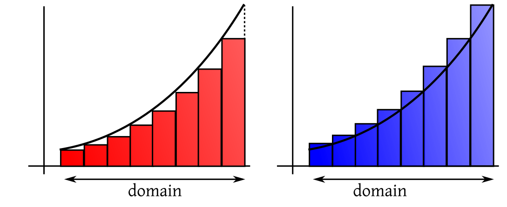
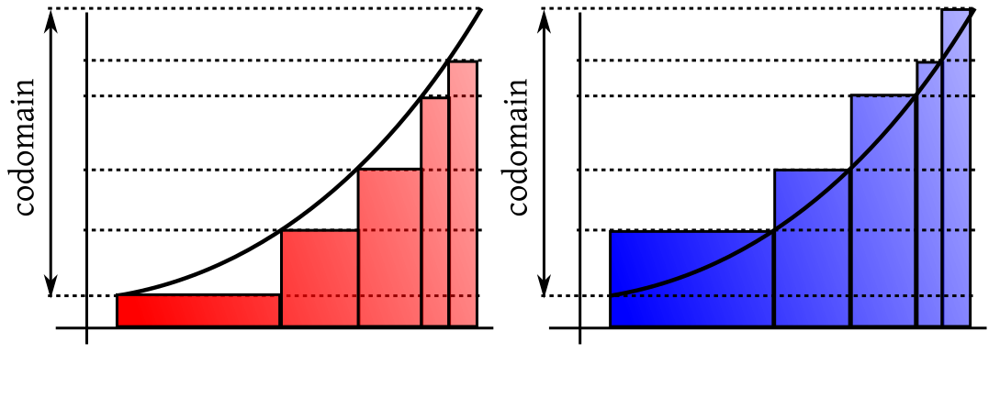
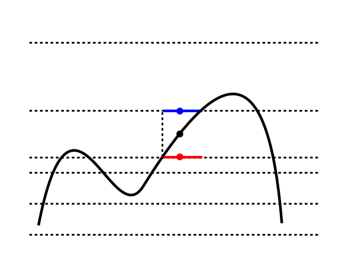
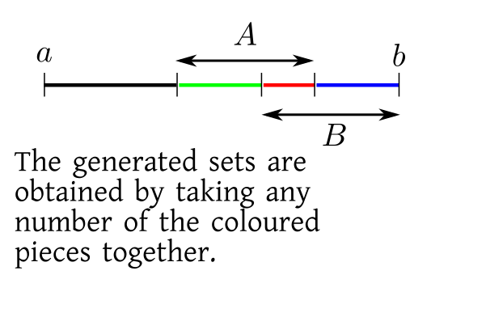
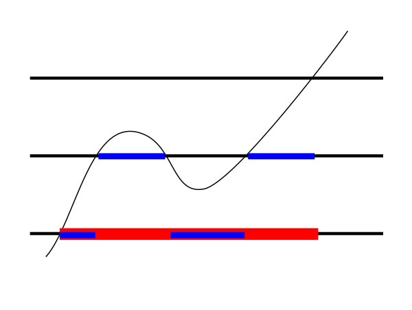
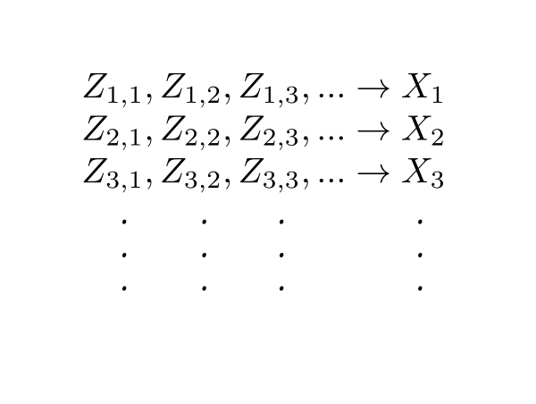

Notions from measure theory$
\newcommand{\calF}{{\mathcal F}}
\newcommand{\calP}{{\mathcal P}}
\newcommand{\calB}{{\mathcal B}}
\newcommand{\calD}{{\mathcal D}}
\newcommand{\ind}{{\mathbb 1}}
\newcommand{\area}{\mathrm {area}}
$
This page will develop the concept of Lebesgue integration starting from Riemann integration.
Video for this section
We all know about
Riemann integration. We shall illustrate the idea with a positive, bounded function
$f:[a,b]\rightarrow{\mathbb R}$. The idea is to measure
the area under its graph by approximating it with steps
functions with finitely many steps. We do this from both above and below. For this we partition the domain of the function
into finitely many intervals and raise rectangles on them as follows.

The intuition is that if we take finer and finer partitions and raise the red rectangles as much as we can under the graph,
we shall come arbitrarily close to the area under the graph. If we do the same from above the graph using the blue rectangles,
then also we should come arbitrarily close to the same area. So our intuition dictates that
sup (red area) = inf(blue area),
and we plan to use this common value as the area under the curve. This brilliant intuition has just one loop hole, for many
functions the sup does not equal the inf! We call such functions non-Riemann integrable, and try
to avoid them at all costs. However, these
bad functions cannot be completely avoided, as they crop up naturally from time to time, usually as the limit of Riemann integrable
functions.
Video for this section
Lebesgue had a solution for this. Instead of partitioning the domain his plan was to partition the codomain. So he also
got red rectangles below the graph and blue rectangles above as follows.

And like Riemann he also hoped that
sup (red area) = inf(blue area),
and he wanted to call this the area under the curve. Before exploring this idea further, let's get comfortable with splitting
the codomain. Here is how you get the red approaximation: draw horizontal lines through the given partition of the codomain.
This gives you some storeys as in a multi-storeyed building. For each point of the graph in a storey, bring it down to the
floor of the storey to get
the red approximation. Raise it to the ceiling of the storey to get the blue approximation.

The black point gives rise to the red and blue points.
Video for this section
Just based on these diagrams, you may think that Lebesgue's idea is no different from Riemann's
idea. But actually, Lebesgue's
approximations are more flexible than Riemann's. To understand this look at the graph below, where
we have shown the lower Lebesgue approximation using just 4 points in the codomain.
Just three heights, but so many rectangles!
Each value in the codomain, can give birth to many rectangles, depending on the ups and downs of the curve.
Indeed, a single height can give rise to infinitely many "rectangles"!
For instance, the function
$$f(x) =\left\{\begin{array}{ll}1&\text{if }x\in{\mathbb Q}\cap[0,1]\\ 0&\text{otherwise.}\end{array}\right. $$
takes only two values, 0 and 1. Yet each value is taken infinitely often.
So you can now feel why Lebesgue's approximations are more flexible than Riemann's:
Riemann's approximations are special cases of Lebesgue's approximations, but
not vice versa.
As a result here
the sup(red) and inf(blue)
match for a more general class
of functions.
This also shows that if Riemann's sup(red) and inf(blue) areas meet, then so must Lebesgue's, and the meeting
point would be the same.
Now we shall take a rigourous look at Lebesgue's idea. First we need a name for the functions that Lebesgue is using to approximate
areas. We shall call them simple functions.
We can express a simple function mathematically using indicator functions. Let a simple function take only the values $c_1,...,c_k$
(all distinct). Let $A_i = \{\omega\in\Omega~:~f(\omega) = c_i\}.$ An example is shown below.
Clearly the $A_i$'s partition $\Omega$.
The $A_i$'s need not always be just finite union of intervals. For example, in case of the Dirichlet function, we have
just two $A_i$'s, one is ${\mathbb Q}\cap [0,1]$ and the other ${\mathbb Q}^c\cap [0,1].$ However, we always have only
finitely many $A_i$'s. We can now write the simple function as
$$f(\omega) = \sum_{i=1}^k c_i\ind_{A_i}(\omega).$$
Lebesgue wanted to think that each $c_i$ constributes a "rectangle" with height $c_i$ on
the base $A_i.$ Such a "rectangle" should have
area $c_i\times$ length
of $A_i$. But how to measure length of $A_i$'s?
It is this question that first
led him to create measure
theory.
EXERCISE 4: There are two countries $T$ and $S.$ Every inhabitant of $T$ is at least as
tall as every inhabitant of $B.$ Consider the two statements:
the height of shortest inhabitant of $T$ equals that of the tallest inhabitant of $S.$
the height of shortest lady of $T$ equals that of the tallest lady of $S.$
Then which of the following is/are true?
$1\Rightarrow 2$ but $2\not\Rightarrow 1$
$2\Rightarrow 1$ but $1\not\Rightarrow 2$
$1\Leftrightarrow 2$
$1\not\Rightarrow 2$ and $2\not\Rightarrow 1$
EXERCISE 5: Let $A$ be the set of all step functions with domain $[0,1]$ with finitely many steps.
Let $B$ be the set of all simple functions with the same domain. Then which of the following is true?
Video for this section
Suppose that we are trying to defined Lebesgue integral over an
interval $[a,b].$ Then we need to define 'length's of subsets of $[a,b].$
Instead of writing 'length', we shall use the
letter $length(A)$ to mean 'length' of $A\subseteq[a,b].$
We know that if $A = [s,t]$, then $length(A)=t-s.$
In particular, $length(\{t\}) = length([a,a]= 0$ have length 0, and
so $length((s,t))=length((s,t])=length([s,t))=t-s.$
Length should satisfy countable additivity (over disjoint
sets). In other words, if $A_1,A_2,...\subseteq [a,b]$ are
disjoint sets for which we have defined length,
then $length(\cup A_n)$ should be $\sum length (A_n).$
Thus, the "length" of the set of all rationals
in $length({\mathbb Q}\cap [a,b])=0,$ and hence
The "length" of all irrationals in $length({\mathbb Q}^c\cap[0,1])=b-a.$
Proceeding in this way we can reasonably hope to extend the
definition of $length$ to a class of subsets of ${\mathbb R}$ which
contains all the intervals, and is
closed wrt countable union, intersection and complementation. Can
we really do this? The short answer is "Yes". We shall next see a more detailed answer.
Video for this section
First, let
us make it clear what we
mean by sets generated by a (possibly infinite) collection of subsets of $\Omega.$ For the finite case, we expanded
the collection of sets step by step, and the procedure had stopped after the finitely many steps. If we start with infinitely
many sets, the process won't end. So we need a careful definition of what we mean by the collection of sets generated by
a given initial collection of sets:
Here the term "smallest" needs some attention. How do we know
there is indeed such "the smallest" collection?
The power set of $\Omega$ is a $\sigma$-algebra containing $\calF$. Also, the intersection of any arbitrary
number of $\sigma$-algebras is again a $\sigma$-algebra, as is trivially obvious from the definition. So we can
take $\sigma(\calF)$ to be the interection of all $\sigma$-algebras containing $\calF.$
For our case, the initial collection consists of all the intervals.
We shall denote the Borel $\sigma $-algebra over $[a,b]$ by
$\calB([a,b])$ or just $\calB$ if $[a,b]$ is obvious from the context. The members of $\calB([a,b]).$are
called Borel sets of $[a,b].$
Video for this section
The Borel $\sigma$-algebra is generated by the intervals. Since we know how to define lengths
of intervals, it seems a reasonable hope that we should be able to define length of each $B\in\calB$.
Let us explore this hope with a little toy example.
Let $\Oemga=[0,10]$ which has length $10$. Also let $A,B$ be two intervals in $\Omega$ each having
length $6$. Convince yourself that you can generate
a collection of 16 sets starting with these.
If you are confused, then look at the following diagram.

Now consider the question: since you the lengths of $\Omega, A$ and $B$, can you find out the
lengths of all these 16 sets? Now,
the answer will be "No", because you need to know how much $A$ and $B$ overlap. So you also need to know $length(A\cap B).$
It should not be difficult to see that this works for any finite initial collection,
$\{A_1,...,A_n\}.$ If I tell you their
lengths and the lengths of all the possible intersections, then you can find out the lengths of
all the sets in the collection generated by
these.
This result has direct proof by induction.
Now, in our case, we know the lengths of all intervals in $[a,b].$ So we are starting with
an infinite collection of sets for which the lengths are known. Since intersections of intervals are again intervals (possibly
empty), we indeed know the lengths of all possible intersections, as well. Unfortunately, our induction argument does not
work in the infinite case. Of course, intuitive imagination leads us to hope that it would be so. But
intuitive imagination
sometimes leads to wrong results:
Sum of two natural numbers is a natural number. So by induction the sum of any finite of
number of natural numbers is also a natural number. So by the law of intuitive imagination, the sum
of all natural numbers
$1+2+3+\cdots$ should again be a natural number! Proof: Just keep on adding!
However, intuitive imagination is not always a liar. It does lead us to a plausible guess, which
we need to prove/disprove using rigorous argument (in this case, using limits).
And that's precisely what we shall do now.
As we have already commented it seems to be a reasonable hope that we should be able to define $length(B)$
for all $B\in\calB.$ This hope indeed comes true, thanks to the following theorem.
Proof:We shall not prove this in this course.[QED]
Our reasonable hope comes true once we take $\calF$ to be the collection of all
intervals in $[a,b].$
Thus we are now able to define $length(B)$ for all Borel $B\subseteq[a,b].$
Usually, $length(B)$ is called
the Lebesgue measure of $B,$ and is denoted by $\lambda(B).$
If $B$ is not Borel, then we take $\lambda(B)$ to be undefined.
The following exercises show that what we did with "length" can be done with "probability", as well.
EXERCISE 6:
Consider two a nonempty set $\Omega$ and two subsets $A,B$ in it. What is the smallest collection of subsets
of $\Omega$ that contains $A,B$ and is closed under union, intesection and complementation? In other
words, make a list of all subsets of $\Omega$ that you can make using union, intersection and complementation starting
with $\Omega.$ Call this collection $\calB.$ Is this is a $\sigma$-algebra?
EXERCISE 7: (Continuation of the last exercise) Take $\calF = \{A,B\}.$ Then clearly $\calB$
is the $\sigma$-algebra generated by $\calF.$ Does this mean that if I specify
probabilities for all elements of $\calF,$ then that would uniquely determine probabilities
of all elements of $\calB?$ Just to get you started, I am specifying $P(A) = 0.4$ and
$P(B) = 0.5.$ Compute (if possible) the probabilities of all events in $\calB.$
As not all subsets are measurable, he naturally restricted his attention to only those simple functions $\sum_i
c_i\ind_{A_i}$, where the $A_i\in\calB.$
Historically, Lebesgue did not use Borel $\sigma$-algebra. He had constructed his own $\sigma$-algebra
(which is now called the Lebesgue $\sigma$-algebra). It is a much larger superset of the
Borel $\sigma$-algebra,
and is also more difficult to work with. That is why most modern treatments of measure theory
work with the Borel $\sigma$-algebra instead of the Lebesgue $\sigma$-algebra.
The next step in Lebesgue's intuition is to approximate the given function using simple functions,
from below and from above.
We want to make sup(red) and inf(blue) equal. It turns out (a non-trivial theorem) that this will
happen if and only if
$$\forall B\in\calB~~f ^{-1} (B)\in \calB.$$
Such functions are called measurable
functions. A word or warning here: Don't forget that we are working with only nonnegative, bounded functions over $[a,b].$
So we are stating that such a function is Lebesgue integrable iff it is measurable.
You will recall that we had arrived at precisely the same condition while defining random variables.
EXERCISE 8: Find $\int f\, d \lambda,$ where
$$f(x) = \left\{\begin{array}{ll}1&\text{if }x\in{\mathbb Q}^c\cap [0,1]\\ 0&\text{otherwise.}\end{array}\right. $$
What is $\int_0^1 f(x)\, dx$ using Riemann integration?
EXERCISE 9: Prove that $\sum_i c_i\ind_{A_i}$ is measureable if and only if $\forall i~~A_i\in\calB.$
Since the Lebesgue integral exists for all bounded, non-negative measurable functions, hence it is enough to consider only
the sup of the approximations from below. This immediately allows us to define Lebesgue integral
for unbounded, measurable functions
as well. We just allow the sup to be $\infty.$
Similarly we may now carry out the procedure
over an unbounded domain, like ${\mathbb R}$ or $(0,\infty)$ etc. There are just a few
problems that are easily sorted out:
In Caratheodory extension theorem we had a condition $\mu(\Omega)< \infty.$ This worked well with us since
for any $a \leq b $ we had $\lambda([a,b]) = b-a < \infty.$ But clearly $\lambda({\mathbb R}) =\infty.$ Fortunately,
Caratheodory extension theorem has a version that replaces the condition $\mu(\Omega)< \infty$ with $\mu(\Omega_i) < \infty$
where $\Omega = \cup_{i=1}^\infty \Omega_i$ is a disjoint union, and each $\Omega_i\in\calF.$
This condition is
satisfied here as $\lambda((n,n+1]) < \infty.$
Also, now we need to make
sure that for every set in the initial collection, we also know the length of its complement
(earlier we could infer $length(A^c)$ as $length(\Omega)-length(A),$ which now may
lead to $\infty-\infty.$).
There is also a minor trouble involving defining area of rectangles with base length infinite.
Any "rectangle" with base
length $\infty$ and positive height has area $\infty$, and any "rectangle" with zero
height has zero area (even if its base has length $\infty$).
Now that we are allowing the Lebesgue integral to equal $\infty,$ we need a little shift in terminology: We shall say
that a nonnegative function is Lebesgue integrable if its Lebesgue integral is finite.
With this shift in terminology it is possible to have measurable functions that are not Lebesgue
integrable (just take some unbounded, measurable function with Lebesgue integral infinite).
Moving from non-negative functions to general functions is easy. For $f:{\mathbb R}\rightarrow{\mathbb R}$ we define $f_+ =\max\{f,0\}$
and $f_- =\max\{-f,0\}.$ Then $f = f_+-f_-.$ We define $\int f\, d \lambda = \int f_+\, d \lambda -\int f_-\, d \lambda,$ if
both the integrals on the rhs are not $\infty.$
We shall say a function $f$ (possibly taking both positive and negative values)
Lebesgue integrable if both $f_+$ and $f_-$ are Lebesgue integrable. This is equivalent to requiring
$|f|$ to be Lebesgue integrable.
EXERCISE 10: Find $\int f(x)\, d \lambda$ where $f:{\mathbb R}\rightarrow{\mathbb R}$ is defined as $f(x)
=\left\{\begin{array}{ll}2&\text{if }x\in{\mathbb Q}^c\\-1&\text{otherwise.}\end{array}\right.$
EXERCISE 11: Find $\int f(x)\, d \lambda$ where $f(x)=x.$
EXERCISE 12: Show that $\int f\, d \lambda$ exists, then so must $\int (-f)\, d \lambda$ and $\int (-f)\, d \lambda = -\int f\, d \lambda.$
For a simple function $\sum_{i=1}^n c_i 1_{A_i}$ we defined the Lebesgue integral as
$$\sum_{i=1}^n c_i \lambda(A_i),$$
where $c_i$ is the height of the $i$-th rectangle, and $\lambda(A_i)$ is the "length" of its base. Then
we took supremum and infimum etc. It
turns out that the entire process of defining Lebesgue integrals need only two properties of
Lebesgue measure: its non-negativity and countable additivity over disjoint sets. The fact that
the length of $(a,b)$ is $b-a$ is not important. This motivates the following
generalisation of the concept of "length":
Our $f:{\mathbb R}\rightarrow{\mathbb R}$ may be replaced by $f:\Omega\rightarrow{\mathbb R}$ for any non-empty set $\Omega.$ Typical choices
for $\Omega$ could be ${\mathbb R}^2$ or ${\mathbb R}^3$ or some finite set. However, any non-empty set would do in general.
We just need some way to measuring the size of subsets of $\Omega.$ For ${\mathbb R}$ we
used "length". For subsets of
${\mathbb R}^2$ we may use "area", while "volume" may be used for subsets of ${\mathbb R}^3.$ For a
finite $\Omega$ we may use "cardinality". All
that we need is that the measure
should be non-negative, and should add up over countably many disjoint sets, i.e., if
we denote the "measure of size" of a set $A\subseteq\Omega$ by $\mu(A)$ then we want
$\mu(A)\geq 0$ and
$\mu(\cup_i A_i) = \sum_i\mu(A_i)$ for disjoint subsets $A_1,A_2,...$
of $\Omega.$
As in the case of "length", it may not be possible in general to define such $\mu$ for
all subsets of $\Omega.$ It is enough to be able to define it for a class of
subsets of $\Omega$. But in order to do mathematical manipulations, that class should be
closed under countable set
operations (union, intersection,
complementation). Any such class, as we have already learned, is called a $\sigma$-algebra.
Once we have decided upon the $\sigma$-algebra and the measure to use, we shall work with simple functions
$\sum_{i=1}^n c_i 1_{A_i}$ where the
$A_i$'s are in the $\sigma$-algebra, so that we may compute $\mu(A_i).$
Let us write down the definition of a measure clearly.
Notice that we have allowed $\mu(A) = \infty.$ For instance, "length" of $(0,\infty)$ is $\infty,$ and
"area" of ${\mathbb R}^2$ is also $\infty.$
Everything else now follows as in case of "length", we have "red rectangles" from below and "blue
rectangles" from above. For a very general class of functions we have sup(red) = inf(blue). For
any such nice function, $f$, we define this common value to be the Lebesgue
integral of $f$ wrt $\mu$, and write it as
$$\int f\, d\mu.$$
In particular, if $f$ is itself a simple function
$$f(x) = \sum_{i=1}^n c_i 1_{A_i},$$
then we have
$$\int f\, d\mu = \sum_{i=1}^n c_i \mu(A_i).$$
Of course, we need all the $A_i$'s to be in the $\sigma$-algebra we are using. Otherwise, $\mu(A_i)$ would
not make any sense.
EXERCISE 13: Let $\Omega = \{1,...,9\}.$ We defne, for any $A\subseteq\Omega$, its measure as
$\mu(A) = |A|,$ the
number of elements in $A.$ Consider $f:\Omega\rightarrow{\mathbb R}$ as $f(i) = i (\mbox{mod }2) + 1.$ Find $\int f\, d\mu.$
EXERCISE 14: Show that any $\sigma$-algebra on $\Omega$ must contain $\phi$ and $\Omega.$
EXERCISE 15: Is $\calP(\Omega)$ a $\sigma$-algebra on $\Omega?$
We have mentioned earlier that for Lebesgue integrals sup(red)=inf(blue) for a rather general class
of functions. In particular, when we worked with $f$ defined on ${\mathbb R}$ equipped with $\calB$
and $\lambda$, we had given a characterisation of all functions for which the Lebesgue
integral $\int f\, d \lambda$ exists:
$$\forall B\in\calB~~f ^{-1}(B)\in\calB.$$
It is not unexpected that if $f$ is defined on $\Omega$ equipped with $\calF$ and $\mu,$ then the
characterisation is
$$\forall B\in\calB~~f ^{-1}(B)\in\calF.$$
Such functions are called measurable functions. These functions are very nicely behaved. In particular, limits
of measurable functions are again measurable. This is the most important reason for preferring Lebesgue integration over Riemann integration.
If $f_n\rightarrow f$ pointwise, and $\int f_n\, d \mu$ exist for each $n,$ then the existence of $\int f\, d \mu$
is immediately guaraneteed.
Interestingly, the concept of a measurable function also arises in a different way in probability theory. Let $X$ be
a random variable. We know that underlying every random variable there is a random experiment, or
more precisely, a probability space
$(\Omega,\calF, P)$ such that
$X:\Omega\rightarrow{\mathbb R}.$ When we want to talk
about things like $P(X\in
B)$ we actually mean
$P(\{\omega~:~X(\omega)\in B\})$ or $P(X ^{-1}(B)).$ In order for this to be defined we need $X ^{-1}(B)\in\calF.$
In other words, we need a random variable to be measurable. Indeed, this is part of the definition of a random variable.
In our course we shall call any such sequence $(s_n)$ a simplification of
$f$ It is not a standard term.
Proof:
For $n\in{\mathbb N}$ and $\omega\in\Omega$ we define $s_n$ as follows. First partition the codomain
$[0,\infty)$ into $2$ intervals $[0,n)$ and $[n,\infty)$ and then
subdivide the first into equal subintervals of length $2^{-n}.$ So you get $N=n2^n+1$ subintervals in all. Call
these $[a_1,a_2),[a_2,a_3),...,[a_N,a_{N+1}),$ where $a_N=n$ and $a_{N+1}=\infty$. These
constitute a partition of the codomain.
Now set $s_n(\omega) = a_k$ if $f(\omega) \in[ a_k,a_{k+1})$ for $k\in\{1,...,N\}$.
The following picture shows this process for $n=1$ and $n=2.$
Notice how the subdivisions for $n=2$ fit into those for $n=1.$
For each $\omega\in\Omega$ and for each $n\in{\mathbb N}$ we have $s_n(\omega)\leq s_{n+1}(\omega).$

A blue point cannot fall below the corresponding red point
If $s_n(\omega) = a$ and $s_{n+1}(\omega) = b,$ then $f(\omega)\in[a,a+2^{-n})$ and also $f(\omega)\in[b+2^{-n-1}).$
So, by the contruction of the partitions, $[b,b+2^{-n-1})\subseteq[a,2^{-n}).$
Thus, $a\leq b,$ as required.
Again, for each $\omega\in\Omega$ we have $s_n(\omega)\rightarrow f(\omega).$
$\forall \omega\in\Omega~~\forall \epsilon>0~~\exists M\in{\mathbb N}~~\forall n\geq M ~~|f(\omega)-s_n(\omega)| < \epsilon.$
$\forall \omega$
Take any $\omega\in\Omega.$
$\forall \epsilon$
Take any $\epsilon>0.$
$\exists M$
Choose $M\in{\mathbb N}$ such that $M> f(\omega)$ and $2^{-M} < \epsilon.$ (Possible since ${\mathbb N}$
is unbounded above and $2^{-n}\rightarrow 0$ as $n\rightarrow \infty.$
This completes the proof.
[QED]
The next step is to show that the red areas indeed converge to the supremum (since we are also
allowing the supremum to be $\infty$, we should better say diverge to the supremum in that case).
Proof:
We shall only deal with the case $\int f\, dP < \infty.$ The case $\int f\, dP = \infty$
is left as an exercise.
The proof proceeds in a somewhat counterintuitive way. So read carefully.
We shall start by noticing that $\lim\int s_n\, dP$ indeed exists.
$\left(\int s_n\, dP\right)$ is a non-decreasing sequence bounded above (by $\int f\, dP$).
We want to show that this limit equals $\int f\, dP$. For this it is enough to show
it is $\geq \int z\, dP$
for any nonnegative, simple function $z\leq f$.
Then $\lim \int s_n\, dP - \int z\, dP\geq -\delta.$
Since $\delta>0$ is arbitrary, this means $\lim \int s_n\, dP - \int z\, dP \geq $ all negative numbers. Only non-negative
numbers can have that property!
So far, we have been just rewording our target. Now we start the main argument.
We are showing:
Since $s_n$'s are non-decreasing, hence $A_1\subseteq A_2\subseteq A_3\subseteq\cdots.$
Also since $\forall\omega\in\Omega~~s_n(w)\uparrow f(w),$ hence $\cup_n A_n=\Omega.$
So
$$\begin{eqnarray*}
\int s_n\, dP & \geq & \int_{A_n} s_n\, dP ~~\left[\mbox{$\because s_n\geq 0$}\right] \\
& \geq & \int_{A_n}z-\delta\, dP~~\left[\mbox{$\because s_n \geq z-\delta$ over $A_n$.}\right]\\
& = & \int z\, dP-\int_{A_n^c}z\, dP-\delta P(A_n)\\
& = & \int z\, dP-\int_{A_n^c}z\, dP-\delta~~\left[\mbox{$\because P(A_n)\leq 1$.}\right]\\
& \geq & \int z\, dP-M\mu(A_n^c)-\delta,
\end{eqnarray*}$$
where $M = \max Z$ (exists finitely, since $z$ is simple).
Hence $\lim \int s_n\, dP > \int z\, dP- M\times 0-\delta,$ completing the proof.
[QED]
Since this last result deals with a probability, hence the integral is just expectation. So we can write the result as follows.
If $X$ is a non-negative random variable, and $X_n$'s are non-negative simple random variables such that $X_n\uparrow X$,
then $E(X_n)\uparrow E(X)$.
EXERCISE 27: Show that if $f$ in the first theorem is a measurable function, then the simplification
constructed in the proof is also measurable.
EXERCISE 28:
Show that the convergence in the first theorem is uniform if $f$ is bounded.
EXERCISE 29:
Show that if, in the first theorem above, $f$ is measurable (w.r.t. any given $\sigma$-field $\calF$
over $\Omega$ and the Borel $\sigma$-field over ${\mathbb R}$), then so must be each $s_n.$
We had stated last semester that if $X,Y$ are two jointly distributed random variables with expectations, and $a,b\in{\mathbb R}$
are any two numbers, then $aX+bY$ is also a random variable with expectation, and $E(aX+bY) = aE(X)+bE(Y).$
First we show that $E(X+Y) = E(X)+E(Y)$ in three steps.
Step 1: Show this when $X,Y$ are simple random variables. We have already done this last semester.
Step 2: Show this for non-negative $X,Y.$ Let $(S_n)$ and $(T_n)$ be simplifications for $X$
and $Y,$ respectively. Then $(S_n+T_n)$ is a simplification for $X+Y.$
Also $E(S_n+T_n) = E(S_n)+E(T_n).$ Te result now follows on taking limit of both sides.
Step 3: Show this for general $X,Y.$ Here we apply step 2 to $X_+, X_-, Y_+$ and $Y_-.$
Then we show that for $a>0$ we have $E(aX) = E(X).$ This proof also proceeds in three steps (left as an exercise).
Finally, we show $E(-X)= -E(X).$ Let $Y = -X.$ Then $Y_+ = X_-$ and $Y_- = X_+.$ So $E(Y) = E(Y_+)-E(Y_-) = E(X_-)-E(X_+) = -E(X).$
We would have been very happy, had there been a result saying: Whenever $X_n\rightarrow X$ we have $E(X_n)\rightarrow E(X)$. Unfortunately,
this is not true in general (think of counterexamples). So we search for extra conditions under which it will be true.
The following theorem is just a restatement of the second technical result discussed earlier:
Interestingly, the last condition may be dropped (i.e., $X_n$'s need not be simple). This gives rise to the theorem
below.
Proof:
Enough to show simple random variables $Y_n$ such that $Y_n\uparrow X $ and $Y_n\leq X_n.$
We already know $E(Y_n)\uparrow E(X).$ But $E(X_n)$ is sandwiched between $E(Y_n)$ and $E(X).$
Let $(Z_{n,k})_k$ be a simplification of $X_n.$

Think of the $Z_{n,k}$'s like an infinite "matrix".
Each row of this "matrix" is a non-decreasing sequence.
Let $Y_n = \max\{Z_{1,n},...,Z_{n,n}\}.$
It is like extracting the upper triangular half of the "matrix" and taking maximum
of each column.
We have $Y_k\leq X_k\leq X$. So $(Y_k)$ is a non-decreasing sequence bounded from above. So $\lim_k Y_k$
exists and $\lim_k Y_k\leq X$.
We have $Z_{n,k} \leq Y_k$ for $k\geq n$.
Taking limit as $k\rightarrow \infty,$ we have $X_n\leq \lim_k Y_k.$
Now taking limit as $n\rightarrow \infty,$ we have $X\leq \lim_k Y_k.$
Hence $\lim_k Y_k= X.$
EXERCISE 30:
If $(X_n)$ is a nonincreasing sequence of nonnegative random variables converging to some random variable $X,$
and $E(X_1)<\infty,$ then show that $E(X_n)\downarrow E(X).$ What if the assumption $E(X_1)<\infty$ is
dropped?
EXERCISE 31:
Suppose that $X_n$'s are nonnegative random variables. Show that
$$E(\sum_1^\infty X_n) = \sum_1^\infty E(X_n).$$
Then, by the definition of $\liminf$, we have $Y_n\uparrow \liminf X_n.$
So, by MCT, $E(Y_n)\rightarrow E(\liminf X_n).$
Now $Y_n \leq X_n,$ and hence $E(Y_n) \leq E(X_n).$
Hence
$$E(\liminf X_n) \leq \liminf E(X_n),$$
as required.
[QED]
Proof:
Clearly, $|X|\leq Y.$
So, by triangle inequality, $|X_n-X|\leq |X_n|+|X|\leq 2Y.$
Let $Z_n = 2Y-|X_n-X|.$ Then $Z_n$'s are all nonnegative random variables.
Applying Fatou's lemma to $(Z_n)$, we have
$$E(\liminf Z_n)\leq \liminf E(Z_n).\hspace{1in} \mbox{(*)}$$
Now
$$\liminf Z_n = 2Y-\limsup|X_n-X| = 2Y,$$
and
$$\liminf E(Z_n) = 2E(Y)-\limsup E|X_n-X| .$$
So (*) becomes
$$2E(Y)\leq 2E(Y)-\limsup E|X_n-X|,$$
or $\limsup E|X_n-X|\leq 0.$
Hence $E|X_n-X|\rightarrow 0,$ as required.
[QED]
Toss an unbaised coin. For each $n\in{\mathbb N}$ we let $X_n = \left\{\begin{array}{ll}1&\text{if }\mbox{head}\\-1&\text{otherwise.}\end{array}\right..$ Thus
all the $X_n$'s are exactly the same (based on the same toss). Also take $X\equiv 0$.
Then $\forall n\in{\mathbb N}~~E(X_n) =0$, and hence $E(X_n)\rightarrow E(X)$.
But $|X_n-X| \equiv 1$. SO $E(|X_n-X|) \not\rightarrow0$.
We have used a special case of this theorem, where $\nu$ is a probability measure and $\mu$ is the Lebesgue measure.
Such probability measures are called absolutely continuous. We have worked with the special case where we had
a density that was Riemann integrable as well.


 Historically, Lebesgue did not use Borel $\sigma$-algebra. He had constructed his own $\sigma$-algebra
(which is now called the Lebesgue $\sigma$-algebra). It is a much larger superset of the
Borel $\sigma$-algebra,
and is also more difficult to work with. That is why most modern treatments of measure theory
work with the Borel $\sigma$-algebra instead of the Lebesgue $\sigma$-algebra.
The next step in Lebesgue's intuition is to approximate the given function using simple functions,
from below and from above.
We want to make sup(red) and inf(blue) equal. It turns out (a non-trivial theorem) that this will
happen if and only if
$$\forall B\in\calB~~f ^{-1} (B)\in \calB.$$
Such functions are called measurable
functions. A word or warning here: Don't forget that we are working with only nonnegative, bounded functions over $[a,b].$
So we are stating that such a function is Lebesgue integrable iff it is measurable.
You will recall that we had arrived at precisely the same condition while defining random variables.
Historically, Lebesgue did not use Borel $\sigma$-algebra. He had constructed his own $\sigma$-algebra
(which is now called the Lebesgue $\sigma$-algebra). It is a much larger superset of the
Borel $\sigma$-algebra,
and is also more difficult to work with. That is why most modern treatments of measure theory
work with the Borel $\sigma$-algebra instead of the Lebesgue $\sigma$-algebra.
The next step in Lebesgue's intuition is to approximate the given function using simple functions,
from below and from above.
We want to make sup(red) and inf(blue) equal. It turns out (a non-trivial theorem) that this will
happen if and only if
$$\forall B\in\calB~~f ^{-1} (B)\in \calB.$$
Such functions are called measurable
functions. A word or warning here: Don't forget that we are working with only nonnegative, bounded functions over $[a,b].$
So we are stating that such a function is Lebesgue integrable iff it is measurable.
You will recall that we had arrived at precisely the same condition while defining random variables.